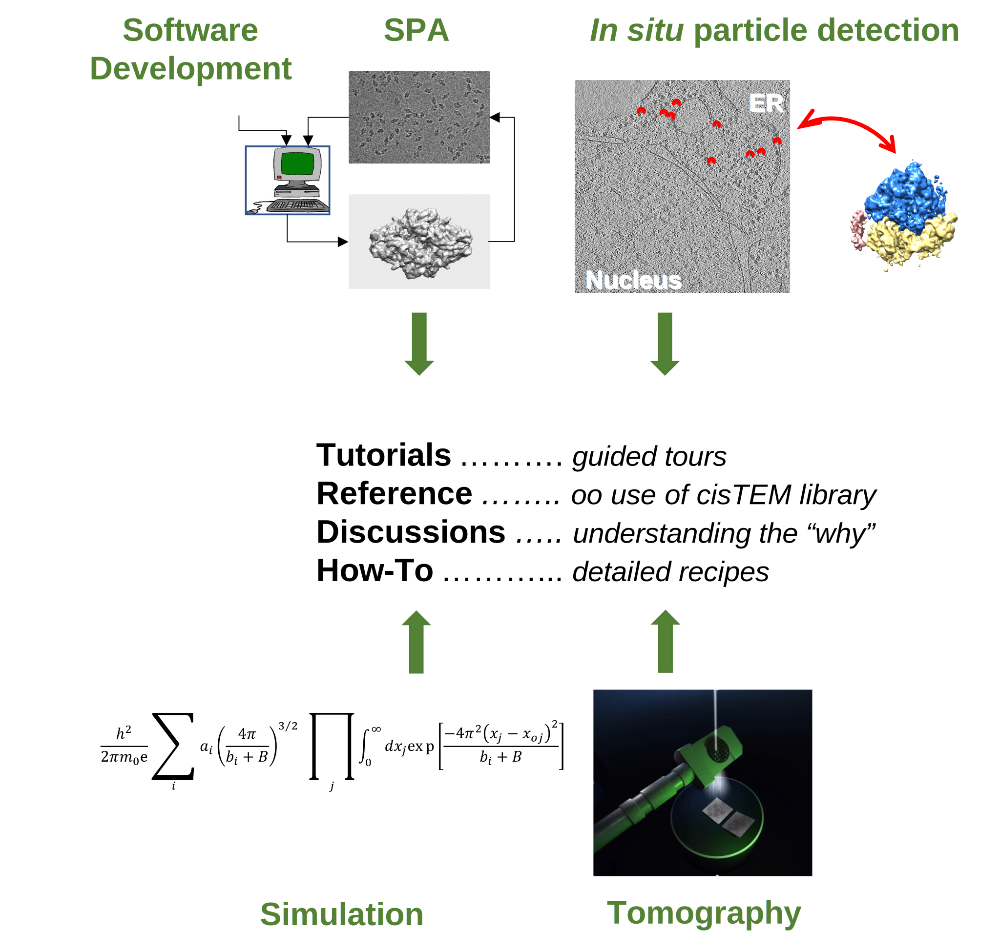

Welcome to your source for info about cisTEM#
cisTEM (computational imaging system for Transmission Electron Microscopy) n -
cisTEM is user-friendly software to process cryo-EM images of macromolecular complexes and obtain high-resolution 3D reconstructions from them. It was originally developed by Tim Grant, Alexis Rohou and Nikolaus Grigorieff and comprises a number of tools to process image data including movies, micrographs and stacks of single-particle images, implementing a complete “pipeline” of processing steps to obtain high-resolution single-particle reconstructions. cisTEM is distributed under the Janelia Research Campus Software License and can be downloaded here.
Request new documentation or report bugs#
If you do not find the info you need, please request it via How Do I … request
If you find a bug, like a broken link, please report it using this form
Beyond a single pipeline#
The main objective of this documention is to enable you to use and/or contribute to the image processing library underlying cisTEM.
